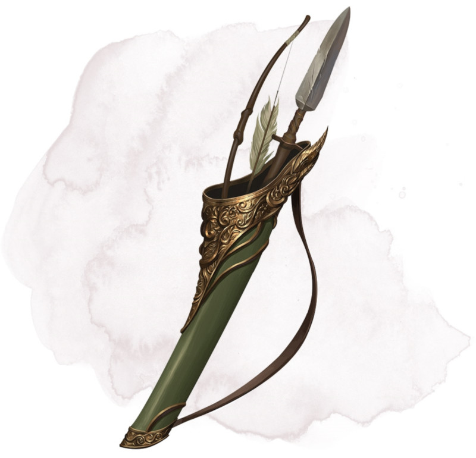

Carquois d'Ehlonna
Objet merveilleux, peu commun
Chacun des trois compartiments du carquois est connecté à un espace extradimensionnel qui permet au carquois de contenir un grand nombre d'objets tout en ne pesant jamais plus de 1 kg au total. Le plus petit compartiment peut contenir jusqu'à 60 flèches, carreaux, ou objets similaires. Le compartiment de taille moyenne peut contenir jusqu'à 18 javelines ou objets similaires. Le plus grand compartiment peut contenir jusqu'à 6 longs objets, comme un arc, un bâton, ou une lance.
Vous pouvez récupérer tout objet que le carquois contient comme vous le feriez avec un carquois normal ou un fourreau.
Vous pouvez récupérer tout objet que le carquois contient comme vous le feriez avec un carquois normal ou un fourreau.
Dungeon Master´s Guide (SRD)
